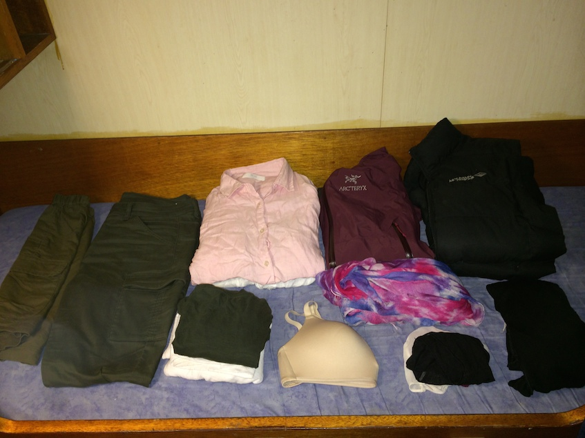
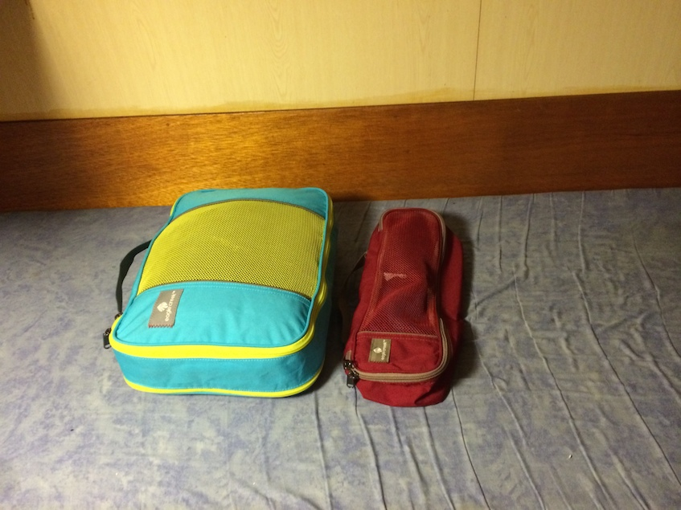
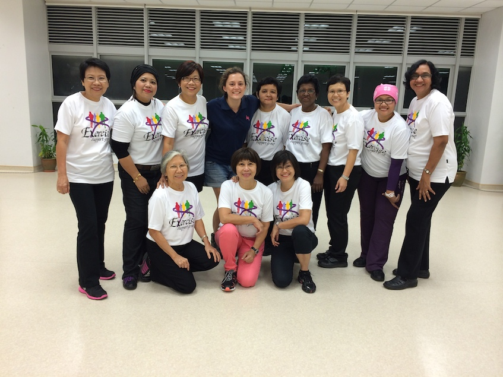
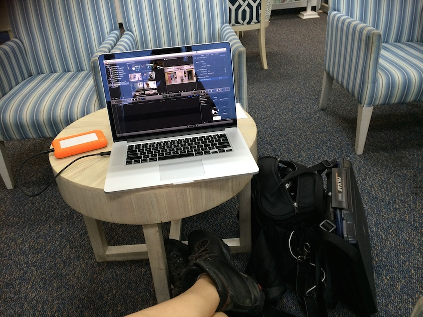
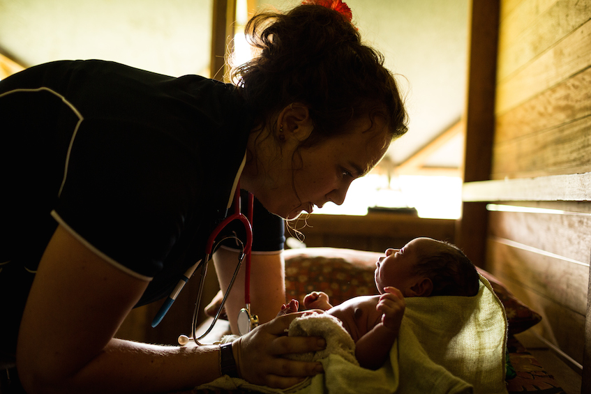
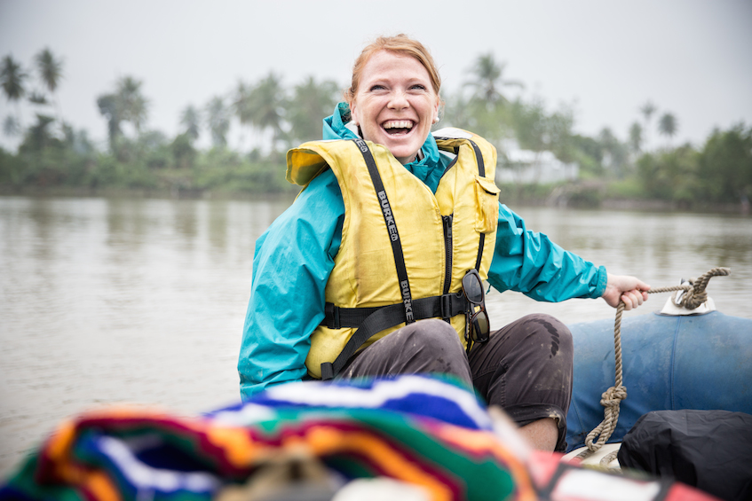
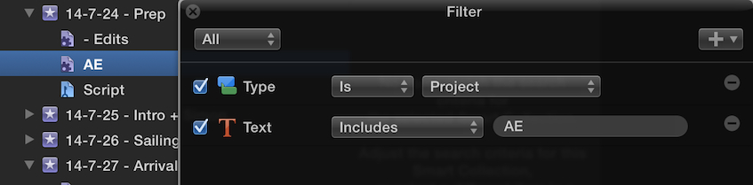
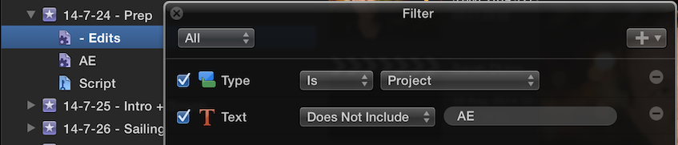

#
Late Nights and Big Swells
It’s midnight on the last night of shooting what was an incredible documentary project in the Gulf Province of Papua New Guinea. I’m exhausted beyond belief – but I’m going to write this blog post. Even if it kills me. BOOM.
I read an article a long while ago, that really stuck with me, about how artists and creative people often feel like “fakes” even once they are incredibly successful.
So when dream projects find my way, and those typical insecurities set in, I have to remind myself that I’ve been working my ass off for this. THIS is the reason why people get incredible opportunities, meet awe-inspiring friends, find such compatible teammates and get PAID to do what they LOVE. It’s because you say YES when everybody else says NO. You smile & soldier on when everybody else turns sour & gives in.
It’s no secret that I’ve gone down epic, scary pathways with NO option for return. And, being consistent with my previous years, 2014 is proving yet again, that what I had previously thought was “an incredible opportunity” is not even tipping the edge.
(Photos by the amazing Mat Lynn)
It sounds insane (to me, and probably most of family & co-workers) to think of living life any larger than I do already. But why? That judgement is made purely from our own personal experience and journey. As soon as you expose yourself to a world bigger than you imagine, your world grows.
I think this point is proven best, through my experience meeting people in nations which are still on the cusp of development. Today, for example, I interviewed a millionaire executive from Papua New Guinea as part of our project. He couldn’t tell me his age, because in the village he grew up, they did not count the days or weeks or months. There was no school – no medical clinic – and it wasn’t until a charitable organisation from New Zealand came to his village – did he come to realise there was more to the his world than his own community. From that exposure to this “new world” he decided to learn more… and so his future rolled out.
How are we any different to that boy in his village? Who knows what worlds are waiting out there.
Our cosmos is big – and no culture will ever be able to help you understand or explain just how BIG the possibilities of your potential are. You need to find your own limits, explore them – the more open we are, the more fears we confront, the more commitments we follow through — the more we discover, for better or for worse.
If I hadn’t abandoned my rationale about what’s possible – I never would have made it this far. And now, since moving to Singapore, surrounded by a city ingrained with constant innovation & growth – I feel like I’m back at the starting line.
So, let me kick-off some behind-the-scenes stories about where we’ve been exploring this year.
Firstly – 2014 was time to finally upgrade my documentary equipment and workflow. After much research/panic – and cutting a VERY long geeky story short (maybe that’s for another time) – I kitted up with:
- Maxed-out MacBook Pro
- LaCie Rugged Drives
- Pelican Laptop Hard-case (which flukingly fits both the Laptop & two drives! Thank-you PC design!!)
- Canon c100
- Another Sennheiser Lapel kit
- ThinkTank SpeedRacer V2.0 (the perfect fit for the awkward camera build)
And – more shockingly than anything else – a complete suffocation-come-eventual-conversion to FCPX ! (Again, a longer post on that experience is still in the works – but yes, you read correctly, I’m 110% converted and would find great difficulty looking back on any other NLE. Anyone keen to buy an AVID dongle?).
A dear friend of mine was interested to see what other gear I take withe me when I travel – so just as a resource for others interested in the field, or for your curiosity; here’s some insights:
UNIQLO is like IKEA for clothing – but ethical. A close friend who worked there always told me stories of their inspiring ethics & manufacturing, but it wasn’t until my photojournalism friend Matt Lynn digressed that everything he wears comes from their stores – that I thought I would check it out. Simply put, a lot of things I own now come from there. I still have a Mountain Designs down-vest and merino long sleeve I can’t live without – and Arcteryx sponsored some wet weather gear on a previous project which I also find comes in handy in tropical locations. So clothing = sorted.
I pack everything down into a travel pack – so I have easy access to gear from a backpack which is my check-in – then ThinkTank & Pelican comes carry-on.
 
So – with gear sorted I was ready to travel…
Since the end of last year, I had imagined that 2014 would be the year that I would be alongside two incredible surgeons motorbiking from Singapore to Sweden to raise awareness and funds for breast cancer research. However, as what always happens, life took some (many) unexpected turns and I was no longer able to join the Long Ride expedition as part of their filmmaking team, but instead, manage the project and edit the final film.
A little bit of back-story – before the Long Ride began – even before I moved to Singapore – a close friend of ours, Alistair Marks, approached LateNite about a story he wanted to tell. The story goes like this:
A young mother was dying from terminal breast cancer. Her brother, a much loved Australian celebrity, asked her; what could he do to support her? She told him that he needed to do whatever he could, to make sure no other mother would ever have to say goodbye to their children because of breast cancer. “… but how?” he replied.
“Well…. maybe you should ride around the country, on a uni-cycle…”
Amazingly, he said “OK” and Love Your Sister was born.
As you can imagine – when I first heard of this project – I was incredibly excited to see what would happen. Is it even POSSIBLE to uni-cycle around Australia? Across desserts? Thousands of kilometres? Let me just remind you – a UNI-cycle – UNI – i.e. ONE WHEEL. I couldn’t believe it would be possible. However, having heard this inspiring story, I knew Samual Johnston (the brother) would find the strength to do the best he could.
Alistair had been filming Samual and Connie (the sister diagnosed) for an incredibly long time as a volunteer, passionate about the project and as a very close friend of both. We gave our camera equipment & helped film in whatever small way we could, from the starting line right up to the final moment when Samual “unicycled” back into Melbourne almost a year later. I had always intended on collaborating with Samual and Alistair to edit the years-worth of footage into a documentary film. It was a cause which I really connected with, especially the way in which Samual was spreading the message – through an absolutely bat-shit crazy adventure!
But, about half way into the LYS journey – I had moved to Singapore officially – and by serendipity came into contact with another breast cancer awareness project. This one was under the National University Hospital of Singapore, being led by two breast cancer surgeons Dr Philip Lau and Mikael Hartman. Their story is a little different:
When Mikael Hartman first came to Singapore from his home-country in Sweden – he was absolutely shocked to find that within his first 10 months, he saw more advanced breast cancer cases than his last 10 YEARS in Sweden. He spoke with his college, Singaporean, Dr. Philip Lau, and they both decided that they would have to do something, and find out more, about this disparity.
They decided, albeit a little foolishly, that they would travel through Asia & the world – from Singapore to Sweden – by motorbike – to learn more about the different Asian cultures & anthropology – to get a better understanding of the struggles medical professionals and patients might face in different regions. At the time I met them they had no idea how they would share their story, communicate their message, or even set up a facebook page.
So, inspired by Alistair, Samual and especially Connie – I took on the ambitious Long Ride Project to create a documentary film and help put a face to breast cancer in Asia.
It’s been an honour and a struggle these last few months working on the project – I’ve followed the footsteps of their crazy expedition to meet women from all over Asia to find solutions and share their story, from Hospitals in Thailand to peer-support groups in Malaysia. I also travelled to Sweden to film the anthropological team who are doing a 2 year research project into the increasing death toll.
WHY are the women coming so late, too late, to the hospital? It’s a question we all want answered, and our documentary will hopefully continue to document the answers.
 
Meanwhile, as the Long Ride project expanded and evolved, Ashwin (my co-founder at GA) was busy developing a project for us in Papua New Guinea:
Some say that Papua New Guinea sit’s only a few kilometres away from the Australian border at the nearest point. For people that live in Townsville, the Capital of PNG; Port Moresby, is closer than their State capital; Brisbane. But despite this incredible proximity to one of the wealthiest and healthiest continents on the planet – PNG is sadly ravaged with poverty and disease.
Cutting a very long and passionate conversation short: tuberculosis shouldn’t exist. It’s been wiped out in most developed nations around the planet and with good reason: There is a cure. There is medical treatment. Therefore, no family should have to die from it.
However, in PNG – tuberculosis is rampant.
But TB is not the only issue facing the nation – with 1 in 13 children dying before the age of 5 and 94% of the population affected by Malaria. Whats worse is that all these people in need might have to paddle days in “dug-out” canoes to get to any kind of health care, because there simply aren’t any roads or methods of transport. Supplying hospitals or medical clinics for communities in PNG is, quite simply, a logistical clusterfuck. It’s just one of those things that comes with living in one of the most environmentally diverse and stunning places on earth – a mountainous, rain-forested, delta-mazed landscape – it’s tricky to get around.
That’s why YWAM Medical Ships Australia is such a beacon of hope for so many of these communities.
When Ash (my co-founder at GA) told me about the project, I knew it wasn’t going to be a walk in the park – and immediately flagged it with my friend Matt to see if he was keen & available to shoot the photography. Although it would have been a luxury to have other crew to help with the documentary, with my new kit I was confident that I could take on the production solo alongside Ash & Matt to lend a hand.
This type of project was a dream job for me – the perfect scenario: Creative freedom, genuine curiosity about a place I’ve not yet had the chance to explore with unique access to places which are otherwise almost unreachable, a cause which is unequivocallyimportant in a country which is in serious need of support, inspiring subjects to interview and leaders to look up too, and my favourite – a whole lot of “protagonists” which I knew would have a life-changing and out-of-their-comfort-zone experience. Needless to say – it was a remarkable experience.
Filmmaking was tough in the conditions – mud, mud and more mud made filming and walking difficult. Getting from the boat to the shore was always a tad precarious, and, on the second last day of the main shooting, a shady wooden bridge collapsed underneath Matt in one of the villages, sending him plummeting into the muddy pig-shit/croc-infested water beneath, loosing two 5DmarkIII cameras, a 200mm lens and the lovely 24-70mm. He even lost the indestructible Leica with a crack!! Everything was insured – and thankfully a large percentage of the shots he needed had been done – PLUS he still had his faithful and sentimental 5DmII and a bag full of lenses – so it wasn’t the end of the world.
If it was tough for us – I can’t imagine how tough it must have been for the volunteers that’s came from around the world to take part. Every day, we filmed these people, from all ages and backgrounds, from 15 years old to mid-late 70’s, from medical students to retired dentists – we filmed them setting up medical clinics in the middle of nowhere, perform thousands of vaccinations, offer prenatal care, pull out thousands of rotting teeth in the dental clinic (well, matt filmed that part for me) and educate as many people as possible about TB, Malaria, Safe Pregnancy and general health advice and knowledge.
The best part for me though, was seeing the local volunteers. Papua New Guinea Nationals coming onboard, giving their time to help support their nation. Local community health workers, coming onto the ship and learning alongside our medical clinic staff, and Manu – the local dentist – coming onboard and inspiring everyone in the village. My interview with Sarah Dunn, the General Manager for Community Development at YWAM MSA, was utterly awesome – as she explained their approach to capacity building, empowerment and her dream to see Papua New Guineans running the medical ship, and seeing more empowered local medical professionals. The ultimate goal, was not to be needed anymore in PNG, and one-day seeing the nation use their ships & resources to reach out to other pacific islands with aid and support.
  Each night after shooting on the C100 and some days collecting a spattering of b.roll from Matt – I would connect the SD card directly into my Mac, connect my Thunderbolt LaCie, open up FCPX, create a new event, and import footage direct from the card. I then used ChronoSync – enabling Dissect Packages – to dupe the Library onto a cheaper USB3 rugged backup. Every second day I would back up again onto a third drive and so on.
I didn’t do too much editing on the trip – however did do a daily log of any clips with interviews or dialog into a “Script” keyword and in every event, and dragged over from each event 2 smart collections to divide my current edits & my “assistant editing” (AE) assembles:
 
Now – I’m back in Singapore with thousands of hours of footage – ready to be made into one stellar documentary. My goal is to raise 2 million dollars through screenings of the film – but more importantly – the other ambition is to take the film we create BACK into the communities, holding screenings throughout the villages we visited. A rare opportunity that might just happen later this year.
#COMINGSOON ;)